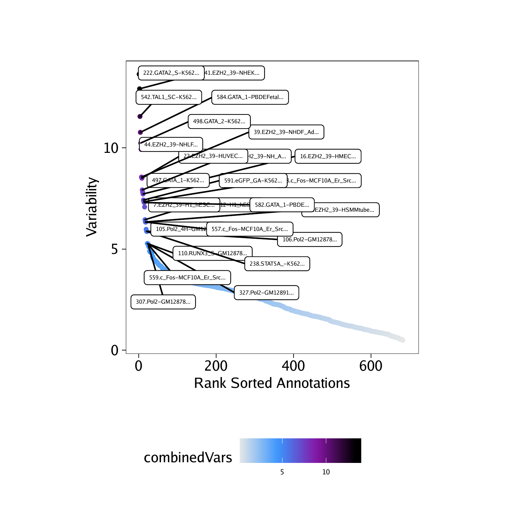
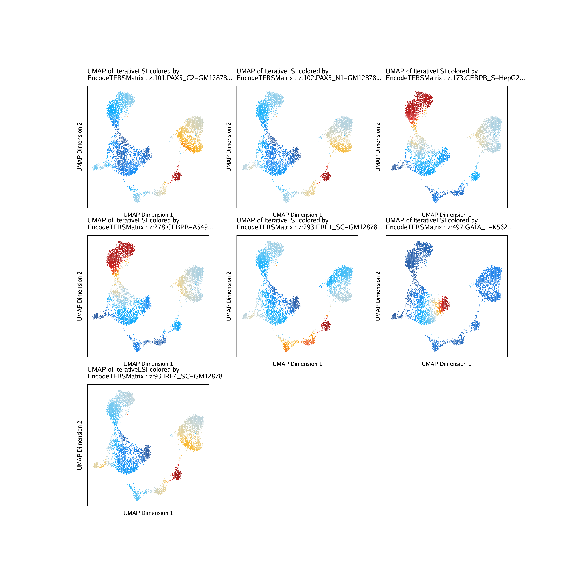
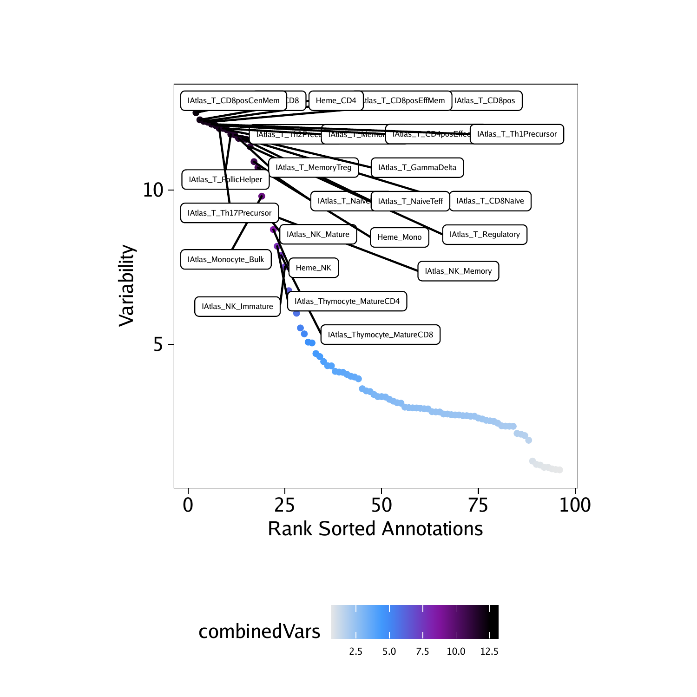
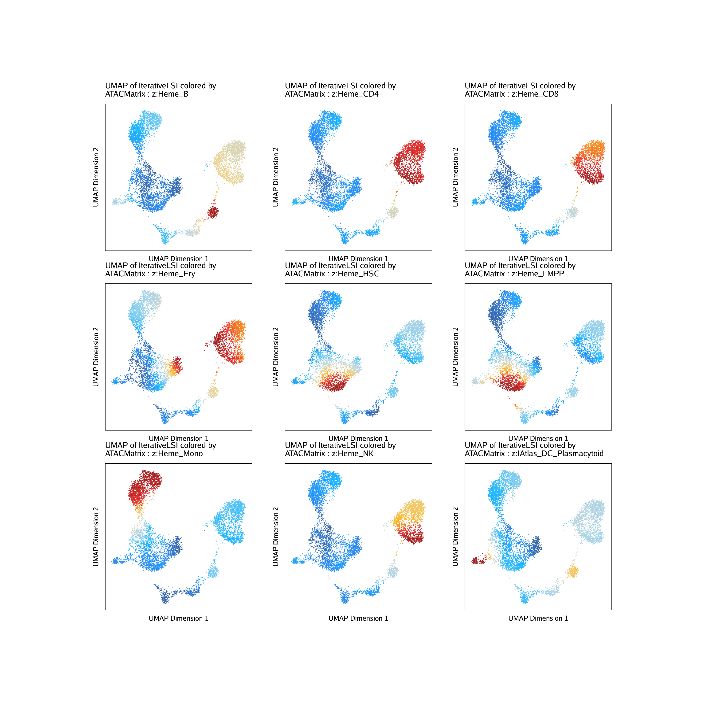
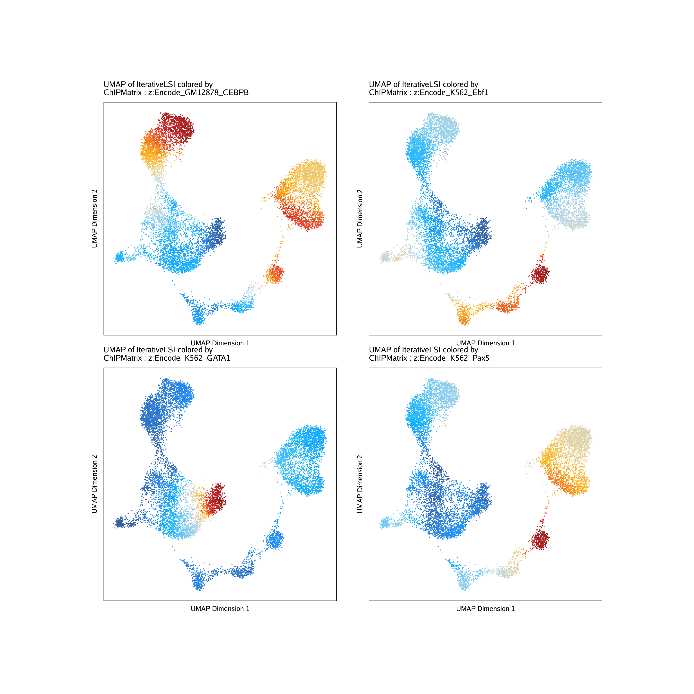

13.2 ArchR and Custom Deviations
In the chapter on Peak Annotation Enrichment, we introduced how to create peak annotations for any set of genomic regions. This encluded (i) ArchR-supported region sets such as curated TF binding sites from ENCODE and peak sets from bulk ATAC-seq and (ii) custom user-supplied region sets. If you have not read this section, we recommend doing so to better understand how peak annotations work.
These peak annotations can be used in deviation calculations in the same way as motifs. Here we provide examples of how to run these analyses but note that the downstream analyses are identical to what was shown in the previous section for motifs and thus we do not provide extensive details on each step of the code. Once you create a deviations matrix in your Arrow files, the rest is the same.
13.2.1 Encode TFBS
In case you have not added an annotations matrix for the “EncodeTFBS” region set, lets do that now.
if("EncodeTFBS" %ni% names(projHeme5@peakAnnotation)){
projHeme5 <- addArchRAnnotations(ArchRProj = projHeme5, collection = "EncodeTFBS")
}Then, we create a deviations matrix, providing this peak annotation to the peakAnnotation parameter.
projHeme5 <- addDeviationsMatrix(
ArchRProj = projHeme5,
peakAnnotation = "EncodeTFBS",
force = TRUE
)## Using Previous Background Peaks!
## ArchR logging to : ArchRLogs/ArchR-addDeviationsMatrix-10374737762a7-Date-2020-04-15_Time-10-59-20.log
## If there is an issue, please report to github with logFile!
## NULL
## 2020-04-15 10:59:26 : Batch Execution w/ safelapply!, 0 mins elapsed.
## ###########
## 2020-04-15 11:08:11 : Completed Computing Deviations!, 8.864 mins elapsed.
## ###########
## ArchR logging successful to : ArchRLogs/ArchR-addDeviationsMatrix-10374737762a7-Date-2020-04-15_Time-10-59-20.log
We can create a dot plot of the ranked deviations.
## DataFrame with 6 rows and 6 columns
## seqnames idx name combinedVars
##
## f222 z 222 222.GATA2_S-K562… 13.6382687713858
## f41 z 41 41.EZH2_39-NHEK… 12.9150554355261
## f542 z 542 542.TAL1_SC-K562… 11.5490744327685
## f584 z 584 584.GATA_1-PBDEFetal… 10.7653053700024
## f498 z 498 498.GATA_2-K562… 10.2384173319845
## f44 z 44 44.EZH2_39-NHLF… 9.92292044310219
## combinedMeans rank
##
## f222 -0.0312421757573656 1
## f41 0.113221166775704 2
## f542 -0.0155915927183644 3
## f584 -0.00997025022971285 4
## f498 -0.0317577572129743 5
## f44 0.0707460230932926 6
## Warning: Removed 7 rows containing missing values (geom_point).

plotPDF(plotVarDev, name = "Variable-EncodeTFBS-Deviation-Scores", width = 5, height = 5, ArchRProj = projHeme5, addDOC = FALSE)## [1] “plotting ggplot!”
## Warning: Removed 7 rows containing missing values (geom_point).
## Warning: Removed 7 rows containing missing values (geom_point).
## [1] 0
Or we can subset these TF binding sites to particular motifs we are interested in and then plot their deviation z-scores per-cell on our UMAP embedding.
tfs <- c("GATA_1", "CEBPB", "EBF1", "IRF4", "TBX21", "PAX5")
getFeatures(projHeme5, select = paste(tfs, collapse="|"), useMatrix = "EncodeTFBSMatrix")## [1] “z:584.GATA_1-PBDEFetal…” “z:582.GATA_1-PBDE…”
## [3] “z:497.GATA_1-K562…” “z:477.CEBPB-K562…”
## [5] “z:462.CEBPB-IMR90…” “z:427.CEBPB-HepG2…”
## [7] “z:426.CEBPB-HepG2…” “z:379.CEBPB-HeLa_S3…”
## [9] “z:344.CEBPB-H1_hESC…” “z:293.EBF1_SC-GM12878…”
## [11] “z:278.CEBPB-A549…” “z:213.CEBPB_S-K562…”
## [13] “z:173.CEBPB_S-HepG2…” “z:130.PAX5_C2-GM12892…”
## [15] “z:123.PAX5_C2-GM12891…” “z:102.PAX5_N1-GM12878…”
## [17] “z:101.PAX5_C2-GM12878…” “z:93.IRF4_SC-GM12878…”
## [19] “z:87.EBF1_SC-GM12878…” “z:86.CEBPB_S-GM12878…”
## [21] “deviations:584.GATA_1-PBDEFetal…” “deviations:582.GATA_1-PBDE…”
## [23] “deviations:497.GATA_1-K562…” “deviations:477.CEBPB-K562…”
## [25] “deviations:462.CEBPB-IMR90…” “deviations:427.CEBPB-HepG2…”
## [27] “deviations:426.CEBPB-HepG2…” “deviations:379.CEBPB-HeLa_S3…”
## [29] “deviations:344.CEBPB-H1_hESC…” “deviations:293.EBF1_SC-GM12878…”
## [31] “deviations:278.CEBPB-A549…” “deviations:213.CEBPB_S-K562…”
## [33] “deviations:173.CEBPB_S-HepG2…” “deviations:130.PAX5_C2-GM12892…”
## [35] “deviations:123.PAX5_C2-GM12891…” “deviations:102.PAX5_N1-GM12878…”
## [37] “deviations:101.PAX5_C2-GM12878…” “deviations:93.IRF4_SC-GM12878…”
## [39] “deviations:87.EBF1_SC-GM12878…” “deviations:86.CEBPB_S-GM12878…”
markerTFs <- getFeatures(projHeme5, select = paste(tfs, collapse="|"), useMatrix = "EncodeTFBSMatrix")
markerTFs <- sort(grep("z:", markerTFs, value = TRUE))
TFnames <- stringr::str_split(stringr::str_split(markerTFs, pattern = "\\.", simplify=TRUE)[,2], pattern = "-", simplify = TRUE)[,1]
markerTFs <- markerTFs[!duplicated(TFnames)]
markerTFs## [1] “z:101.PAX5_C2-GM12878…” “z:102.PAX5_N1-GM12878…”
## [3] “z:173.CEBPB_S-HepG2…” “z:278.CEBPB-A549…”
## [5] “z:293.EBF1_SC-GM12878…” “z:497.GATA_1-K562…”
## [7] “z:93.IRF4_SC-GM12878…”
p <- plotEmbedding(
ArchRProj = projHeme5,
colorBy = "EncodeTFBSMatrix",
name = markerTFs,
embedding = "UMAP",
imputeWeights = getImputeWeights(projHeme5)
)## Getting ImputeWeights
## ArchR logging to : ArchRLogs/ArchR-plotEmbedding-103747b681a1c-Date-2020-04-15_Time-11-08-26.log
## If there is an issue, please report to github with logFile!
## Getting UMAP Embedding
## ColorBy = EncodeTFBSMatrix
## Getting Matrix Values…
## Getting Matrix Values…
##
## Imputing Matrix
## Using weights on disk
## Using weights on disk
## Plotting Embedding
## 1 2 3 4 5 6 7
## ArchR logging successful to : ArchRLogs/ArchR-plotEmbedding-103747b681a1c-Date-2020-04-15_Time-11-08-26.log
p2 <- lapply(p, function(x){
x + guides(color = FALSE, fill = FALSE) +
theme_ArchR(baseSize = 6.5) +
theme(plot.margin = unit(c(0, 0, 0, 0), "cm")) +
theme(
axis.text.x=element_blank(),
axis.ticks.x=element_blank(),
axis.text.y=element_blank(),
axis.ticks.y=element_blank()
)
})
do.call(cowplot::plot_grid, c(list(ncol = 3),p2))
13.2.2 Bulk ATAC-seq
Similarly, we can use ArchR-curated bulk ATAC-seq peak sets for our motif deviation calculations.If you have not added motif annotations
In case you have not added an annotations matrix for the “EncodeTFBS” region set, lets do that now.
if("ATAC" %ni% names(projHeme5@peakAnnotation)){
projHeme5 <- addArchRAnnotations(ArchRProj = projHeme5, collection = "ATAC")
}Then, we create a deviations matrix, providing this peak annotation to the peakAnnotation parameter.
## Using Previous Background Peaks!
## ArchR logging to : ArchRLogs/ArchR-addDeviationsMatrix-103743481be2a-Date-2020-04-15_Time-11-09-46.log
## If there is an issue, please report to github with logFile!
## NULL
## 2020-04-15 11:09:52 : Batch Execution w/ safelapply!, 0 mins elapsed.
## ###########
## 2020-04-15 11:13:09 : Completed Computing Deviations!, 3.376 mins elapsed.
## ###########
## ArchR logging successful to : ArchRLogs/ArchR-addDeviationsMatrix-103743481be2a-Date-2020-04-15_Time-11-09-46.log
We can create a dot plot of the ranked deviations.
## DataFrame with 6 rows and 6 columns
## seqnames idx name combinedVars combinedMeans
##
## f22 z 22 IAtlas_T_CD8posCenMem 12.8413703976471 -0.0972946574781075
## f86 z 86 Heme_CD8 12.5070480860108 -0.079462324469343
## f85 z 85 Heme_CD4 12.2753260246254 -0.0561621531675016
## f23 z 23 IAtlas_T_CD8posEffMem 12.2250185804317 -0.104389732164243
## f21 z 21 IAtlas_T_CD8pos 12.1998071900673 -0.09178088897301
## f33 z 33 IAtlas_T_Th1Precursor 12.1352640996498 -0.0819315630754632
## rank
##
## f22 1
## f86 2
## f85 3
## f23 4
## f21 5
## f33 6

plotPDF(plotVarDev, name = "Variable-ATAC-Deviation-Scores", width = 5, height = 5, ArchRProj = projHeme5, addDOC = FALSE)## [1] “plotting ggplot!”
## [1] 0
Or we can plot the deviation z-scores for each of these peak sets per-cell on our UMAP embedding.
ATACPeaks <- c("Heme_HSC", "Heme_LMPP", "Heme_Ery", "Heme_Mono", "Heme_CD4", "Heme_CD8", "Heme_B", "Heme_NK", "IAtlas_DC_Plasmacytoid")
getFeatures(projHeme5, select = paste(ATACPeaks, collapse="|"), useMatrix = "ATACMatrix")## [1] “z:Heme_NK” “z:Heme_Mono”
## [3] “z:Heme_LMPP” “z:Heme_HSC”
## [5] “z:Heme_Ery” “z:Heme_CD8”
## [7] “z:Heme_CD4” “z:Heme_B”
## [9] “z:IAtlas_DC_Plasmacytoid” “deviations:Heme_NK”
## [11] “deviations:Heme_Mono” “deviations:Heme_LMPP”
## [13] “deviations:Heme_HSC” “deviations:Heme_Ery”
## [15] “deviations:Heme_CD8” “deviations:Heme_CD4”
## [17] “deviations:Heme_B” “deviations:IAtlas_DC_Plasmacytoid”
markerATAC <- getFeatures(projHeme5, select = paste(ATACPeaks, collapse="|"), useMatrix = "ATACMatrix")
markerATAC <- sort(grep("z:", markerATAC, value = TRUE))
markerATAC## [1] “z:Heme_B” “z:Heme_CD4”
## [3] “z:Heme_CD8” “z:Heme_Ery”
## [5] “z:Heme_HSC” “z:Heme_LMPP”
## [7] “z:Heme_Mono” “z:Heme_NK”
## [9] “z:IAtlas_DC_Plasmacytoid”
p <- plotEmbedding(
ArchRProj = projHeme5,
colorBy = "ATACMatrix",
name = markerATAC,
embedding = "UMAP",
imputeWeights = getImputeWeights(projHeme5)
)## Getting ImputeWeights
## ArchR logging to : ArchRLogs/ArchR-plotEmbedding-1037416f3cb56-Date-2020-04-15_Time-11-13-23.log
## If there is an issue, please report to github with logFile!
## Getting UMAP Embedding
## ColorBy = ATACMatrix
## Getting Matrix Values…
## Getting Matrix Values…
##
## Imputing Matrix
## Using weights on disk
## Using weights on disk
## Plotting Embedding
## 1 2 3 4 5 6 7 8 9
## ArchR logging successful to : ArchRLogs/ArchR-plotEmbedding-1037416f3cb56-Date-2020-04-15_Time-11-13-23.log
p2 <- lapply(p, function(x){
x + guides(color = FALSE, fill = FALSE) +
theme_ArchR(baseSize = 6.5) +
theme(plot.margin = unit(c(0, 0, 0, 0), "cm")) +
theme(
axis.text.x=element_blank(),
axis.ticks.x=element_blank(),
axis.text.y=element_blank(),
axis.ticks.y=element_blank()
)
})
do.call(cowplot::plot_grid, c(list(ncol = 3),p2))
13.2.3 Custom Deviations
Instead of using the ArchR-curated region sets described above, we can provide our own custom region sets as a peak annotation. These custom annotations can be used in exactly the same way as the ArchR-curated annotations.
First, in case you haven’t already created this “EncodePeaks” annotation in a previous chapter, lets create it by downloading some ENCODE peak sets and calling addPeakAnnotations().
EncodePeaks <- c(
Encode_K562_GATA1 = "https://www.encodeproject.org/files/ENCFF632NQI/@@download/ENCFF632NQI.bed.gz",
Encode_GM12878_CEBPB = "https://www.encodeproject.org/files/ENCFF761MGJ/@@download/ENCFF761MGJ.bed.gz",
Encode_K562_Ebf1 = "https://www.encodeproject.org/files/ENCFF868VSY/@@download/ENCFF868VSY.bed.gz",
Encode_K562_Pax5 = "https://www.encodeproject.org/files/ENCFF339KUO/@@download/ENCFF339KUO.bed.gz"
)
if("ChIP" %ni% names(projHeme5@peakAnnotation)){
projHeme5 <- addPeakAnnotations(ArchRProj = projHeme5, regions = EncodePeaks, name = "ChIP")
}Then, we make a deviations matrix from this peak annotation.
## Using Previous Background Peaks!
## ArchR logging to : ArchRLogs/ArchR-addDeviationsMatrix-10374246a529b-Date-2020-04-15_Time-11-13-54.log
## If there is an issue, please report to github with logFile!
## NULL
## 2020-04-15 11:13:59 : Batch Execution w/ safelapply!, 0 mins elapsed.
## ###########
## 2020-04-15 11:14:24 : Completed Computing Deviations!, 0.505 mins elapsed.
## ###########
## ArchR logging successful to : ArchRLogs/ArchR-addDeviationsMatrix-10374246a529b-Date-2020-04-15_Time-11-13-54.log
The rest of the analysis workflow is the same as what has now been presented multiple times above.
We can plot the ranked deviations.
## DataFrame with 4 rows and 6 columns
## seqnames idx name combinedVars combinedMeans
##
## f1 z 1 Encode_K562_GATA1 6.33176528990239 -0.0165812177586936
## f3 z 3 Encode_K562_Ebf1 3.41531511621115 0.0355188580388895
## f4 z 4 Encode_K562_Pax5 3.24513143947069 -0.00960057929930531
## f2 z 2 Encode_GM12878_CEBPB 0.822128491900276 0.00742820197777246
## rank
##
## f1 1
## f3 2
## f4 3
## f2 4
## Warning: Removed 21 rows containing missing values (geom_label_repel).
plotPDF(plotVarDev, name = "Variable-ChIP-Deviation-Scores", width = 5, height = 5, ArchRProj = projHeme5, addDOC = FALSE)## [1] “plotting ggplot!”
## Warning: Removed 21 rows containing missing values (geom_label_repel).
## Warning: Removed 21 rows containing missing values (geom_label_repel).
## [1] 0
And we can plot the deviation z-scores overlayed on our UMAP embedding.
markerChIP <- getFeatures(projHeme5, useMatrix = "ChIPMatrix")
markerChIP <- sort(grep("z:", markerChIP, value = TRUE))
markerChIP## [1] “z:Encode_GM12878_CEBPB” “z:Encode_K562_Ebf1” “z:Encode_K562_GATA1”
## [4] “z:Encode_K562_Pax5”
p <- plotEmbedding(
ArchRProj = projHeme5,
colorBy = "ChIPMatrix",
name = markerChIP,
embedding = "UMAP",
imputeWeights = getImputeWeights(projHeme5)
)## Getting ImputeWeights
## ArchR logging to : ArchRLogs/ArchR-plotEmbedding-10374635d5970-Date-2020-04-15_Time-11-14-35.log
## If there is an issue, please report to github with logFile!
## Getting UMAP Embedding
## ColorBy = ChIPMatrix
## Getting Matrix Values…
## Getting Matrix Values…
##
## Imputing Matrix
## Using weights on disk
## Using weights on disk
## Plotting Embedding
## 1 2 3 4
## ArchR logging successful to : ArchRLogs/ArchR-plotEmbedding-10374635d5970-Date-2020-04-15_Time-11-14-35.log
p2 <- lapply(p, function(x){
x + guides(color = FALSE, fill = FALSE) +
theme_ArchR(baseSize = 6.5) +
theme(plot.margin = unit(c(0, 0, 0, 0), "cm")) +
theme(
axis.text.x=element_blank(),
axis.ticks.x=element_blank(),
axis.text.y=element_blank(),
axis.ticks.y=element_blank()
)
})
do.call(cowplot::plot_grid, c(list(ncol = 2),p2))